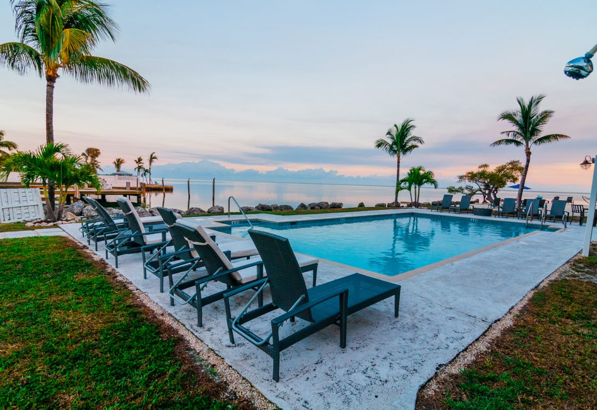

Guides and inspiration for your Florida Keys stay
From practical planning to dock-to-dinner traditions, explore our latest stories for making the most of Marathon. Browse seasonal guides, family-friendly itineraries, and local experiences that start steps from the water.
Latest articles
Browse our complete collection, with the newest stories first.
.jpg)
Blog #04 · Published March 22, 2026
Best Time to Visit the Florida Keys: A Complete Month by Month Guide
This guide breaks down what each month in the Keys actually feels like from a Marathon perspective, including weather, crowds, rates, and fishing patterns. It gives practical tradeoffs between peak season comfort and shoulder-season value. Travelers can quickly match timing to priorities like calmer docks, better rates, or stronger seasonal fishing.
Read ArticleBlog #03 · Published March 15, 2026
Best Cook Your Catch Restaurants Near Marathon, Florida Keys
Focused on the classic dock-to-table Keys tradition, this article explains how hook-and-cook dining works after your day on the water. It compares confirmed local restaurants near Seascape, including prep styles, distance, and what to know before arriving with your fish. It is designed to help guests avoid guesswork and turn a catch into a memorable waterfront dinner.
Read Article
Blog #02 · Published March 8, 2026
Best Florida Keys Family Weekend Itinerary
Built around a simple three-day flow, this itinerary focuses on keeping family travel smooth, flexible, and centered on the water. It highlights why Marathon works well for shorter stays and emphasizes easy transitions between dock time, pool resets, and low-stress evenings. The article also includes a straightforward day-by-day plan for arrival, on-the-water time, and relaxed checkout.
Read Article.jpg)
Blog #01 · Published March 1, 2026
The Florida Keys Family Weekend That Feels Easy from the Start
This story maps out a low-friction family escape designed around Seascape’s waterfront setting, with realistic pacing instead of overpacked plans. It blends dock sunsets, pool time, and practical local outing ideas to keep each day enjoyable for mixed-age groups. The itinerary also reinforces direct-booking guidance and on-site convenience for a calmer overall trip.
Read Article